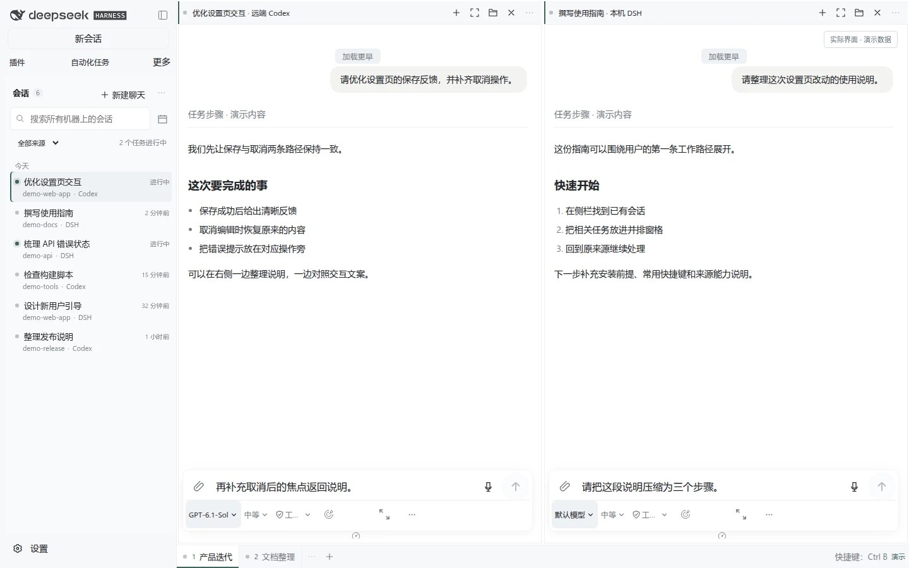
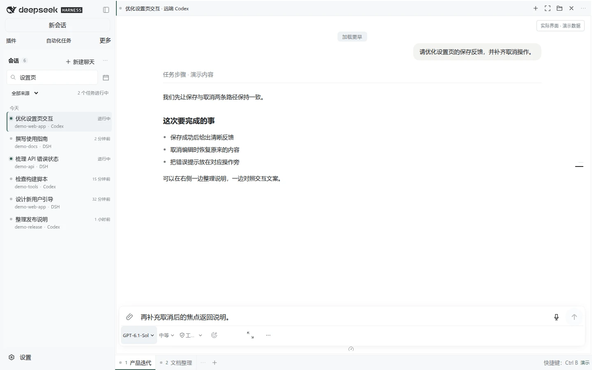

延续 DSH 的使用习惯
复用官方 Conversation、编辑器与插件扩展点。聊天、阅读与来源能力放进同一套工作区。
OPEN SOURCE / PREVIEW 0.1.2
工作站上的 Codex，另一台机器的 DSH，
还有本机没写完的草稿。现在，一起接着做。
自建需 Node.js 24 · 已有工作区？直接打开受信任的访问入口。

为跨机器工作而做
HHPI 是 DeepSeek Harness 的开源 Web 工作区插件。在一个侧栏找到不同机器上的会话，用窗口和分屏组织上下文，再回到对应来源继续任务。
从上下文，到下一步
一段三步界面导览。
点击任一步，看看工作如何衔接。
画面来自实际产品界面，使用专门准备的演示数据。

一个工作区，清楚的归属
HHPI 把会话接进来。
任务仍然在原来的机器上运行。
复用官方 Conversation、编辑器与插件扩展点。聊天、阅读与来源能力放进同一套工作区。
会话对应原来源。可用的文件、上传和终端操作，使用对应机器提供的资源与权限。
关闭窗格只释放当前视图。原生执行继续由源端管理，下次再回到已有会话。
从这里开始
当前提供开发预览版。自建时请下载完整 Bundle，Host 与每个 Runner 使用同一套扩展。
下载 Preview BundleNode.js 24.x
pnpm 11.28.5 · DSH 0.2.2-rc.1
安装需要联网
在计划作为 Host 的机器上解压下载文件，然后运行安装器：
npm install --global pnpm@11.28.5 @deepseek-ai/dsh@0.2.2-rc.1
tar -xzf hapi-dsh-bundle-0.1.2-preview-20261111.tgz
node package/dist/install.mjs install --profile hapi --role host安装器会打印 release 目录。将下方 RELEASE 换成这个实际路径：
node "RELEASE/runtime/node_modules/hapi-dsh/dist/cli.js" init --config-only
node "RELEASE/runtime/node_modules/hapi-dsh/dist/cli.js" doctor
node "RELEASE/runtime/node_modules/hapi-dsh/dist/cli.js" start已有实例请按升级指南保留配置、机器身份与 profile。
访问已有工作区时，只需在浏览器中打开管理员提供的受信任入口。自建时在 Host 安装完整 Bundle；要接入另一台 DSH 机器，再为它配置 Runner。
当前接入本机 DSH、正式配对的远端 DSH，以及通过原机器 app-server 接入的原生 Codex。其他 Agent 需要各自的来源适配器。每种来源提供的模型、文件、终端与审批等操作，取决于它实际支持的能力。查看 Codex 指南 ↗
这是持续开发中的预览发行，适合愿意反馈问题的自建使用者。请查看对应发行内容与已知限制，保留已有配置和可恢复版本。上面的界面导览使用演示数据，帮助你了解工作方式。
完整包同时提供 HHPI、匹配的 DSH 源码扩展、安装器、对应源码与许可。单独的插件 tgz 或 npm 上同名的普通 rc 包不能替代这套安装。它仍需联网获取未修改的依赖。
HHPI 是产品名，技术包名和命令保持为 hapi-dsh，远端插件为 hapi-dsh-runner。项目复用了 HAPI 的部分工作区和输入实现，并保留原作者与来源声明。
在开源里，一起接着做
遇到问题，分享想法，或接入下一个 Agent。